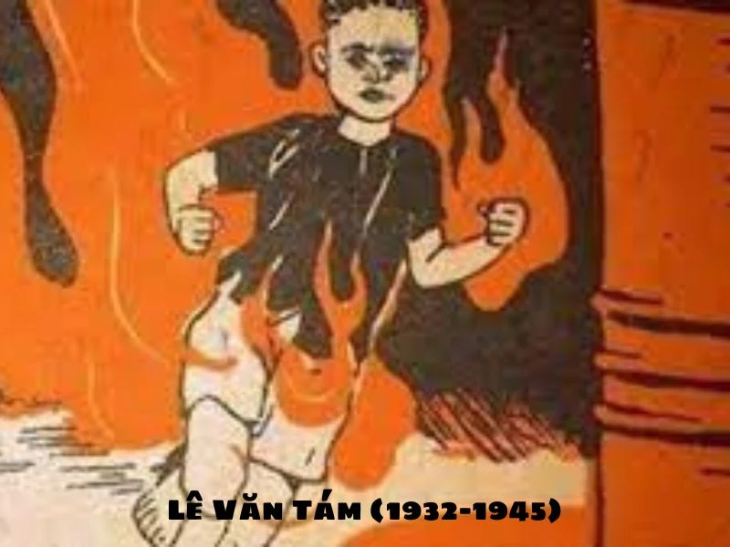
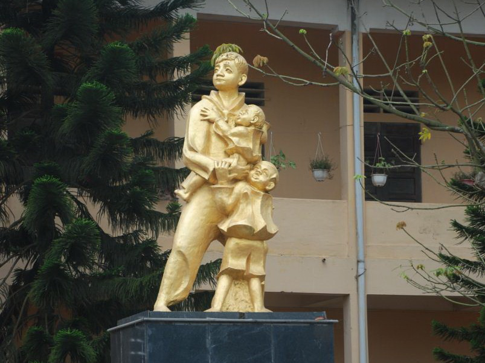

Buổi thành lập Đội tại núi rừng Cao Bằng
Ngày 15/5/1941, trong khu rừng già ở Cao Bằng, Đội Nhi đồng Cứu quốc chính thức được thành lập với 5 đội viên đầu tiên...
Đọc thêmĐội được thành lập tại thôn Nà Mạ, xã Trường Hà, huyện Hà Quảng, tỉnh Cao Bằng. Gồm 5 đội viên đầu tiên: Kim Đồng, Cao Sơn, Thanh Minh, Thủy Tiên, Thanh Thủy.
Người đội trưởng đầu tiên của Đội đã anh dũng hy sinh khi làm nhiệm vụ bảo vệ cán bộ cách mạng.
Đội tham gia bảo vệ chính quyền cách mạng, làm nhiệm vụ liên lạc, canh gác.
Phong trào thi đua yêu nước đầu tiên của thiếu nhi.
Đã anh dũng hy sinh khi đốt kho xăng của giặc Pháp ở Thị Nghè, Sài Gòn.
Đội được đổi tên thành Đội Thiếu nhi Tháng Tám.
Nữ anh hùng liệt sĩ trẻ tuổi hy sinh tại Côn Đảo.
Đội được mang tên Đội Thiếu niên Tiền phong.
Phong trào bắt đầu từ liên đội Tam Sơn, Hà Bắc.
Anh hùng lực lượng vũ trang nhân dân.
Hy sinh khi cứu các em nhỏ trong chiến tranh phá hoại.
Đội được vinh dự mang tên Đội TNTP Hồ Chí Minh.
Phong trào khuyến khích thiếu nhi tiết kiệm, giúp đỡ bạn nghèo.
Chặng đường 80 năm xây dựng và trưởng thành.
Nông Văn Dền (1929-1943)
Đội trưởng đầu tiên, hy sinh khi làm nhiệm vụ bảo vệ cán bộ.

(1942-1947)
Dũng sĩ diệt kho xăng Thị Nghè.
(1933-1952)
Nữ anh hùng liệt sĩ Đất Đỏ.
(1953-1965)
Hy sinh cứu các bạn nhỏ trong chiến tranh.

(1914-1931)
"Con đường của thanh niên chỉ là con đường cách mạng".
(1940-1964)
Anh hùng lực lượng vũ trang nhân dân.
Ngày 15/5/1941, trong khu rừng già ở Cao Bằng, Đội Nhi đồng Cứu quốc chính thức được thành lập với 5 đội viên đầu tiên...
Đọc thêmKim Đồng, Cao Sơn, Thanh Minh, Thủy Tiên và Thanh Thủy - những đội viên đầu tiên đã vượt qua nhiều khó khăn...
Đọc thêmTrong một lần đi liên lạc, Kim Đồng phát hiện địch phục kích, anh đã hy sinh để bảo vệ cán bộ...
Đọc thêmCậu bé 12 tuổi Lê Văn Tám đã nhận nhiệm vụ cảm tử: đốt kho xăng của giặc Pháp...
Đọc thêm"Yêu nước chống Pháp không phải là tội!" - Câu nói bất hủ của chị trước tòa án thực dân...
Đọc thêmTrong trận bom Mỹ, cậu bé 12 tuổi Nguyễn Bá Ngọc đã lao ra che chắn, cứu hai em nhỏ...
Đọc thêm"Con đường của thanh niên chỉ là con đường cách mạng" - Câu nói trở thành kim chỉ nam...
Đọc thêmPhong trào tiết kiệm giúp bạn nghèo, xây dựng nhà máy nhựa Tiền Phong...
Đọc thêmBắt đầu từ Liên đội Tam Sơn, phong trào lan rộng toàn quốc...
Đọc thêmTừ 5 đội viên đầu tiên, Đội đã có hàng chục triệu đội viên...
Đọc thêm